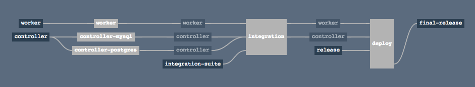
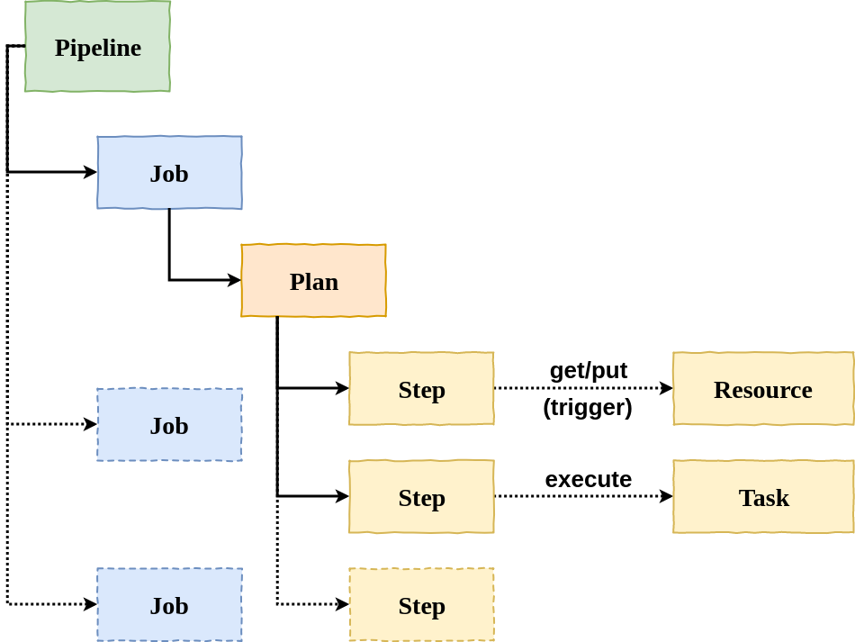
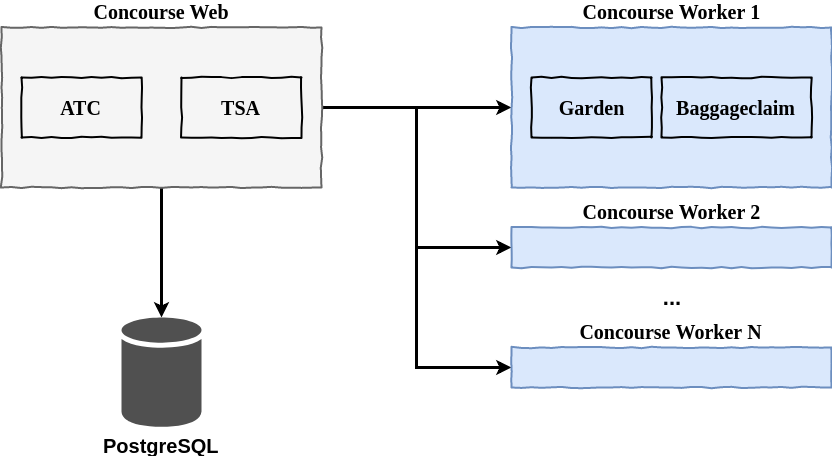
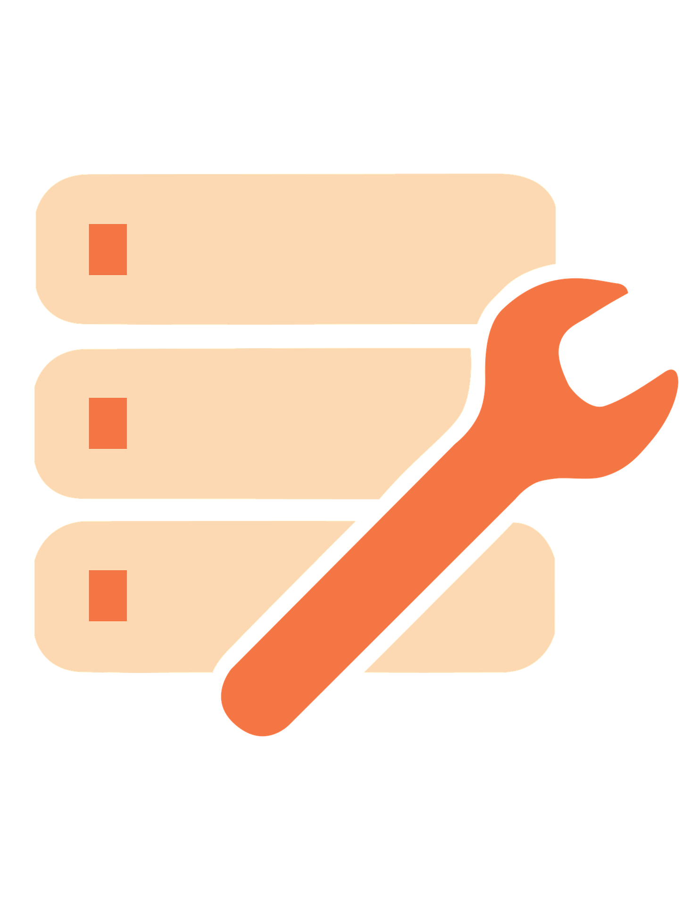

Andreas Falk
Novatec Consulting GmbH
andreas.falk@novatec-gmbh.de / @andifalk (Twitter)https://www.novatec-gmbh.de
What is Concourse CI ?
“Concourse is an open-source continuous thing-doer”
“Built on the simple mechanics of resources, tasks, and jobs, Concourse presents a general approach to automation that makes it great for CI/CD”
Concourse CI Features
Native Visualized Pipelines
Clean Isolation By Using Containers
Administration Via Command Line
(picture taken from Concourse Tutorial by Stark & Wayne)
Concourse CI Concepts
Configuration As Code
No Plugins
Simple Building Blocks for Pipelines
Pipeline
Resource
Connect Concourse CI to the outside world
Resource Types
Provided
Git: Pull/push from/to git repository
S3: Get and upload from/to AWS S3
CF: Deploy an application to Cloud Foundry
Resource Types
Community
Artifactory: Get/upload artifacts from/to Artifactory
Kubernetes: Apply kubectl actions
Task
Pure Function
Hello World task
task-helloworld.yml
---
platform: linux
image_resource:
type: docker-image
source: {repository: alpine}
run:
path: echo
args: ["Hello, world!"]
Hello World Pipeline
pipeline-helloworld.yml
jobs:
- name: hello-world
plan:
- task: say-hello
file: task-helloworld.yml
Hello World Pipeline (Inline)
pipeline-helloworld-inlined.yml
jobs:
- name: hello-world
plan:
- task: say-hello
config:
platform: linux
image_resource:
type: docker-image
source: {repository: alpine}
run:
path: echo
args: ["Hello, world!"]
Concourse Architecture
Setting up Concourse CI
Possible Options
Run with docker-compose
$ wget https://concourse-ci.org/docker-compose.yml
$ docker-compose up
Use Concourse quickstart
Required: Installed PostgreSQL database
$ concourse quickstart \
--add-local-user dev:dev \
--main-team-local-user dev \
--postgres-user concourse --postgres-password concourse \
--worker-work-dir /home/afa/concourse/worker \
--external-url http://192.168.178.27:8080 \
--worker-garden-dns-server 1.1.1.1
Install into Kubernetes cluster
Prerequisite: Install Helm
$ helm install stable/concourse
After installing, perform this in same shell:
$ helm install stable/concourse
$ export POD_NAME=$(kubectl get pods --namespace default \
-l "app=alternating-angelfish-web" \
-o jsonpath="{.items[0].metadata.name}")
$ echo "Visit http://127.0.0.1:8080 to use Concourse"
$ kubectl port-forward --namespace \
default $POD_NAME 8080:8080
Concourse
Command Line 1 x 1
Getting Started
Login to Concourse
$ fly login -t local -c http://127.0.0.1:8080 \
-u user -p password
Logout from one Concourse target
$ fly logout -t local
Logout from all Concourse targets
$ fly logout --all
Execute Tasks
Execute a single task
$ fly execute -t local -c mytask.yml
Show results of a build execution
$ fly -t local builds
Using Pipelines
Create or update a pipeline
$ fly set-pipeline -t local -p mypipeline \
-c mypipeline-config.yml
Un-pause a pipeline
$ fly unpause-pipeline -t local -p mypipeline
Delete a pipeline
$ fly destroy-pipeline -t local -p mypipeline
Start & Watch Jobs
Start a job in a pipeline
$ fly trigger-job -t local -j mypipeline/myjob
Start a job in a pipeline and watch output
$ fly trigger-job -t local -j mypipeline/myjob --watch
Stream a build's output
$ fly watch -t local -j mypipeline/myjob
Concourse Security
Authentication Providers
Local users
3rd party providers (GitHub, CF UAA)
Authorization By Teams
“main” team (Administration)
Further teams created/updated by “main” team
Credentials in Concourse CI
Hashicorp Vault

“A Security Swiss Army Knife”
Jeff Mitchell, Vault Lead, HashiCorp
https://www.vaultproject.ioCredHub
CredHub manages credentials like passwords, certificates, certificate authorities, ssh keys, rsa keys and arbitrary values
https://github.com/cloudfoundry-incubator/credhubConcourse quickstart
with Vault
Required: Installed Vault instance
$ concourse quickstart \
--add-local-user dev:dev \
--main-team-local-user dev \
--postgres-user concourse --postgres-password concourse \
--worker-work-dir /home/afa/concourse/worker \
--external-url http://192.168.178.27:8080 \
--worker-garden-dns-server 1.1.1.1 \
--vault-url http://10.2.0.3:8200 \
--vault-auth-backend approle \
--vault-auth-param role_id=db02de05-fa39-4855-059b-... \
--vault-auth-param secret_id=6a174c20-f6de-a53c-74d2-...
Credential lookup in Vault
The parameter ((my_password)) is looked up in Vault namespaces in this order:
- /concourse/{TEAM}/{PIPELINE}/my_password
- /concourse/{TEAM}/my_password
plan:
- get: my-repo
- task: integration
file: my-repo/ci/integration.yml
params:
REMOTE_SERVER: 10.20.30.40:8080
USERNAME: ((my-username))
PASSWORD: ((my-password))
Q&A
https://www.novatec-gmbh.de
https://blog.novatec-gmbh.de
andreas.falk@novatec-gmbh.de
@andifalk
IT-Tage 2018 (Frankfurt)
12.12.2018
Continuous Delivery-Pipelines mit Concourse CI
References
- Concourse CI (https://concourse-ci.org)
- Concourse Fly CLI (https://github.com/concourse/fly/releases)
- CredHub (https://github.com/cloudfoundry-incubator/credhub)
- Vault (https://www.vaultproject.io)
- Sources and Presentation (https://github.com/andifalk/concourse-ci-demo)
All images used are from Pixabay
and published under Creative Commons CC0 license.